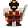
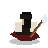

鬼柴田戦記

戦国サバイバル・アクション
あなたは柴田勝家。敵陣へ踏み込むほど軍の士気が上がり、 後ろへ退くほど士気は落ちる。
最後の北庄城だけは「勝つ」戦いではない。どこまで抗えるかが、あなたの最終記録になる。
各項目の「変更」を押したあと、割り当てたいキーを押してください。
士気MAX時は、斬撃ボタンがそのまま「かかれ柴田！」に変わる。

ここで倒れるわけにはいかぬ。
天正11年（1583）、賤ヶ岳の戦いに敗れた柴田勝家は北庄城へ退き、城と運命をともにしたと伝わる。